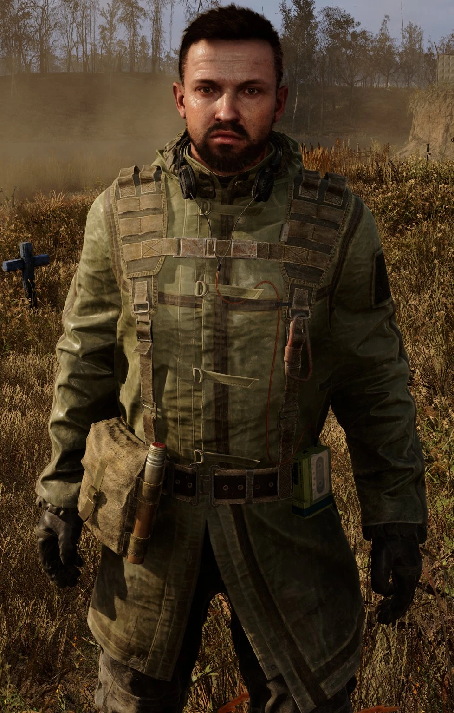
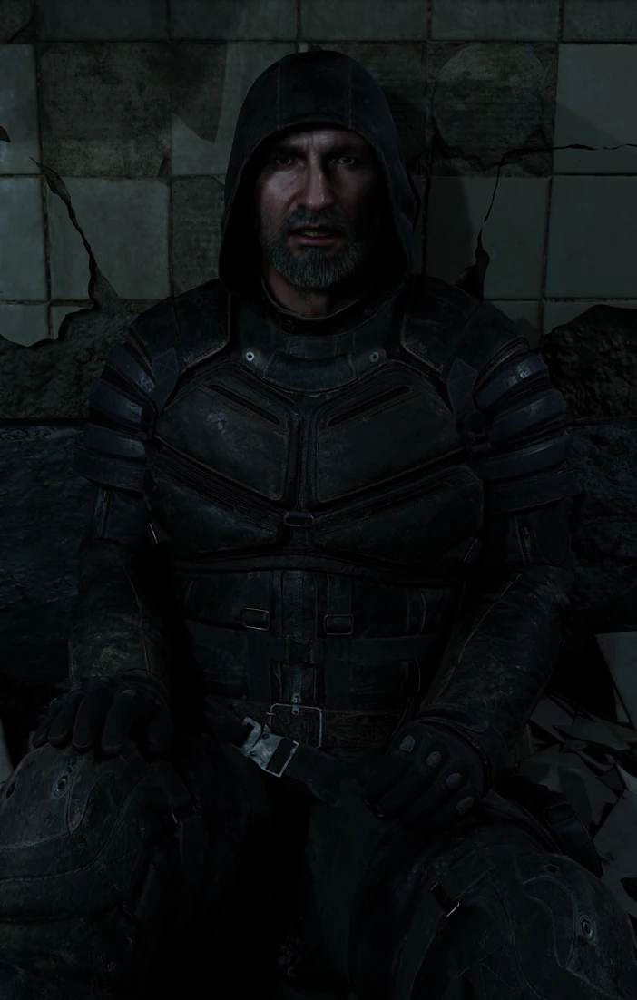
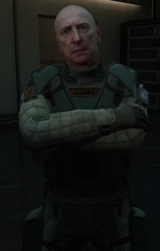
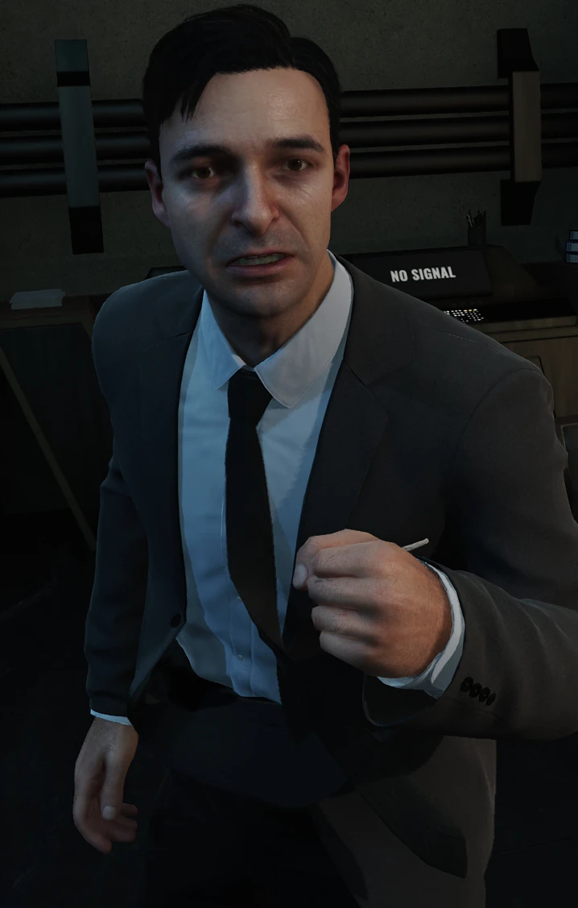
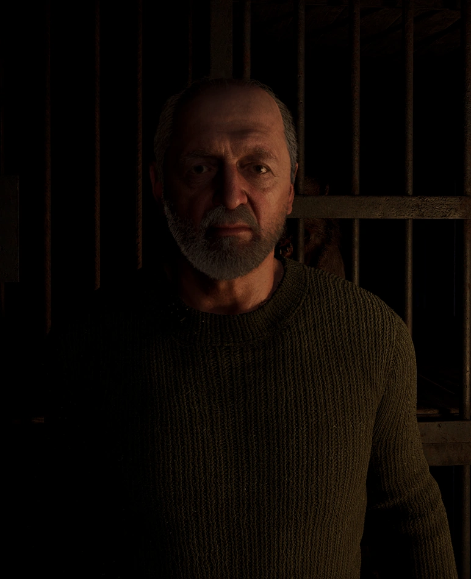
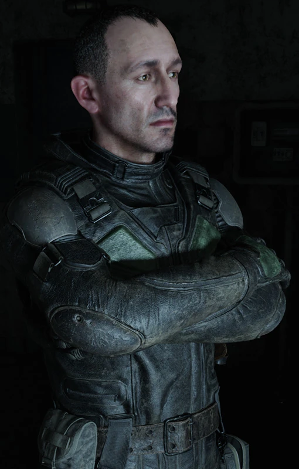
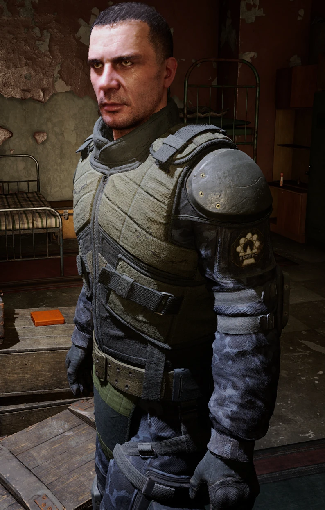

Кого ви зустрінете:
🧠 Ріхтер

Холодний розум Зони. Колишній науковець, що шукає істину там, де інші бачать смерть. Його знання — зброя, але й прокляття.
🧠 Ріхтер
Колись він шукав істину в лабораторіях, тепер — серед руїн Зони. Його розум гостріший за ніж, але кожне відкриття коштує частинки людяності. Він бачить закономірність там, де інші бачать хаос. Рідкісні союзники обережні поруч із ним, бо бояться його холодного розуму. Кожен його крок продуманий, і водночас непередбачуваний. Можливо, саме тому Зона дозволяє йому жити.
Детально про Ріхтера⚡ Шрам

Найманець, який пережив неможливе. Його тіло вкрите шрамами, а серце — холодом. У Зоні він — і мисливець, і здобич.
⚡ Шрам
Його тіло — мапа болю, яку не прочитає жоден учений. Він не боїться смерті, бо вже бачив її обличчя. Його кроки чують мутанти, а ім’я пам’ятає Зона. Кожен шрам — нагадування про помилки і втрати. Він мисливець і здобич одночасно. І хоч він іде вперед, здається, що сама Зона веде його за собою.
Детально про Шрама🦅 Полковник Коршунов

Залізна воля і військова дисципліна. Для нього Зона — ворог, якого треба знищити. Але навіть він відчуває: вона змінює всіх.
🦅 Полковник Коршунов
Він воює не з ворогом, а з безумством самої Зони. Його накази точні, як постріли, але кожен удар залишає слід у душі. Вірить у порядок, навіть коли світ розсипається на очах. Його підлеглі бояться його суворості, але поважають. Він знає: дисципліна може врятувати життя. І саме вона тримає його живим серед хаосу.
Детально про Коршунова⚗️ Доктор Далін

Керівник НДІЧАЗ, що досліджує аномалії Зони. Він прагне контролювати те, що підпорядковується лише Зоні.
⚗️ Доктор Далін
Керівник НДІЧАЗ, який переступив межу між наукою і вірою. Він прагне зрозуміти Зону, але вона змінює його швидше, ніж він її. Його колеги зникли або збожеволіли, а він лишився — спостерігати. Його досліди відкрили нові можливості і нові жахи. Навіть Зона наче стежить за ним і відповідає на його експерименти. У його очах — не цікавість, а тиша, від якої холоне кров.
Детально про Даліна🧢 Бродяга

Самотній мандрівник без минулого. Йому не потрібні фракції чи друзі — лише Зона і шанс дожити до світанку. Виживання — його єдиний закон.
🧢 Бродяга
Живе між двома пострілами — учорашнім і завтрашнім. Не залишає слідів, не має друзів, не шукає мети. Його історії схожі на вигадки, але всі, хто чув їх, зникають. Він нікому не довіряє, бо знає, що Зона завжди обманює. Його кроки тихі, але впевнені. Можливо, самотність і є його найбільшим союзником у світі хаосу.
Детально про Бродягу🧬 Доктор Кайманов

Старий сталкер і свідок перших днів Зони. Знає більше, ніж говорить, і лікує не лише тіло, а й душу. Його шлях — спокута.
🧬 Доктор Кайманов
Його називають божевільним, але він просто знає більше, ніж інші. Колись він лікував людей, тепер — душі, зламані Зоною. Його слова сповнені болю й мудрості, а очі — сумні. Дехто каже, що він може говорити зі Зоною, але ніхто цього не бачив. Навіть сталкери уникають питати його про минуле. Іноді здається, що він говорить не сам, а через нього говорить сама Зона.
Детально про Кайманова🎯 Стрілець

Легенда, що повернулася з самого центру Зони. Він шукає відповіді, яких, можливо, не існує. Його ім’я стало символом виживання.
🎯 Стрілець
Колись він відкрив істину, але заплатив пам’яттю. Тепер іде тим самим шляхом, шукаючи себе. Його обличчя ніхто не бачив двічі — і це не випадковість. Кажуть, коли він дивиться вглиб Зони, вона дивиться у відповідь. Він знає, що істина завжди змінюється, але все одно йде за нею. Іноді його мовчання страшніше будь-якої зброї.
Детально про Стрільця🎖️ Дегтярьов

Майор СБУ, який бачив Зону зсередини. Розумний, обережний і небезпечний. Він знає: правда тут завжди має ціну.
🎖️ Дегтярьов
Він бачив Зону зсередини й зрозумів: вона не ворог, але й не союзник. Його звіти змінюють долі, а рішення — історію. Дегтярьов не шукає слави, тільки відповіді. Та щоразу, коли наближається до них, Зона віддаляється ще далі. Він знає, що навіть найсильніший план можна зруйнувати одним невидимим фактором. І все ж він іде вперед, бо інколи відповідь коштує більше, ніж життя.
Детально про Дегтярьова